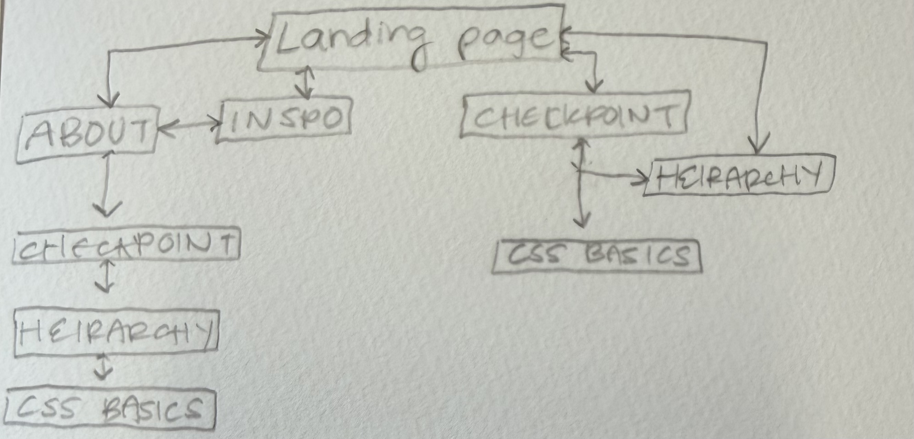
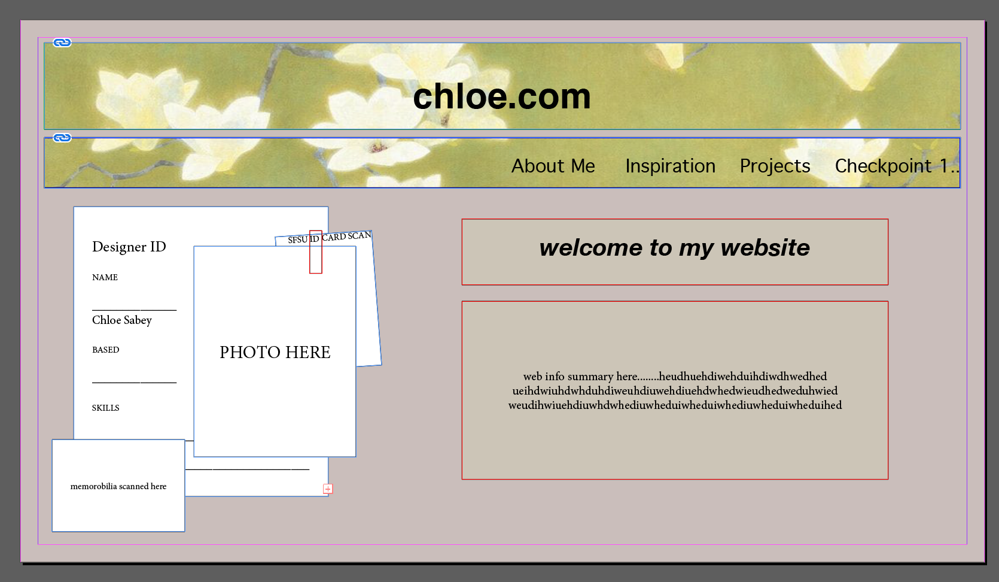

checkpoint 1
Figuring out how to link pages together
parent folder --> child folder
Checkpoint 1 index wants to be dropped on top (because 1 is in the title)
working moodboard:


br>RGB red green blue for SCREEN (additive color model) CMYK cyan magenta yellow black for PRINT(subtractive color model) RGB always when coding the CSS
I can't figure out how to link my email!! I checked google and it says but its not working!!!
I wanted to start centering my text and links because that layout is pleasing to me. I played with color palletes and have landed on powder yellow, plum, and bright pink. I seperated the main nav links and the assignment links on the main page, i want to turn the assignment links into a seperate page to keep them together.
these are the font embed codes from google fonts....check out ADOBE FONTS NEXT

I CONNECTED ALL THE NAVIGATION.. forwards and backwards through each link to and from the home page.
REFLECTION (9/22) 1: How did you style the main navigation? I made the background a powder yellow, centered the pink text. made the text and header different fonts. I also made them different colors to complete the three main colors of my color pallete from my inspo moodboards 2:What changed when the navigation became more visually consistent? I had to reorganize my code, I realized a lot of the text was all over the place and I needed to fit it into consistent places, all heading under h1, all sub under h2, all body under p, etc. 3: Did uniform navigation improve the experience? Why or why not? YES!! I fixed all the links between pages and this helped tremendously. It was incredibly satisfying to see each page interconnected. I can't wait to make the web more complex, different pages looping to more than just the home page, etc. 4: What belongs in the root stylesheet? Whatever you want to be universally true about the style of every single element across each page. 5: What belongs in a child stylesheet? Whatever you want to be applied to the specific page you are working on. I plan on having each page feel unique yet grounded in the overall style. 6: What still feels unresolved? I want to figure out what elements I'm keeping consistent, and which elements will be unique to each page!!
9/29/26: checkpoint one part four
When I first opened the published site I felt such a strong sense of accomplishment! I was so inspired that I spent
the rest of my day drawing up a title card for my webpage and amping up some design elements. The css practice page two didn't push through teh git hib upload,
but that seemed to be an issue for pretty much everyone. I still have to trouble shoot that, probably will get to it tomorrow morning. All of my links worked and
everything looked how I wanted it to from the public url. All my file names and locations are correct and I'm starting to get a hang of how to keep everything organized.
I do want to do a pass over all my pages in VSC to tidy everything up and make sure my heirarchy is dialed in, and eveything is easy to find and uniform across each page.
9/29/26 checkpoint 1 part three
After we published our webpage I immedietley revisited my entry page and chipped away at styling it. I am pretty happy with the colors and fonts I've
been picking through. I am far from where I want it, but I am very happy with my title card. The right side of the title card kept overlapping with the border in
a weird way and that took me forever to figure out. I had to tweak the margin, padding, and border to find the right ratio. In the end the placement turned out really nice.
I want to make the background color a bit lighter, and I'm curious to try out custom fonts. There are some really cool ones online I would love to upload to my
project. The styling of the webpage is exciting to think about, but when I remember my coding skills are still very limited it can be frustrating sometimes.
However, finding a solution to a coding problem to make my vision become a reality has been so rewarding. I'm even considering taking the interactive design class next semester
to keep this ball rolling.

Checkpoint 1: STEP 5:
WOW! This step was a doozy. It was challenging to apply flex to all aspects of the head, nav, and content. However, as I went along, all the tools and skills I’ve learned so far began to fall into place. I started feeling pretty overwhelmed with the state of my webpage. So, I decided to start by designing the layout I wanted across my webpage in Illustrator. I tried to keep it simple and design a template that I could replicate using the hierarchy and flex system. I will attach the images of these templates below my checkpoint. I began to style each of my pages from the same CSS sheet. This was the game changer: plugging in the section and div class codes to the CSS and watching visually how each element is in its own box and can be manipulated through this system was incredibly satisfying. The first two days I spent working on this were long and frustrating days, as I wasn’t sure when to apply wrap/nowrap, and the additional flex elements. However, once I got it, unifying the styling across the site became easier and easier.

checkpoint 2
Entry 1
Christian was able to provide me with some really helpful feedback. We both really enjoyed the opportunity to critique each others work live. We talked throught what stage of development I'm at and what my next steps should be. I took on his critique to integrate the checkpoint page to fit with the rest of my pages design wise. However, I will compromise by keeping the content a bit messy becuase I'd like to polish it later on. I agree with his suggestion to include images first and work the content in after, however I felt I needed to push my templates in for now, just to get my visual layout somewhat together. I was able to fix all my project links after Christian pointed out that a few of them were broken. Luckily the fixes were easy enough, I simply didn't do the ../ correctlt the first time for a few of my links. I also fixed the broken fleetwood link, although I'm really not sure why it wasn't working in the first place. I also made the reflection on the entry point visible as that got flagged in my checkpoint 1 grade. Christian pointed out to me that the font is slighty different on the entry point nav bar and I can't believe I didn't catch this before. I'm guessing this is because the fonts in each html page might nit be as updated as the fonts in my entry point. This will be the next fix that I will attempt. The final thing I've considered from christian is how to make the projects page a bit more intuitive. I'm coming up with a layout in illustrator to map out a template idea, which I will incorporate after I fix my font issue.